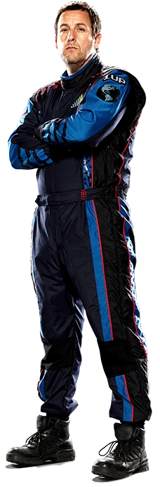
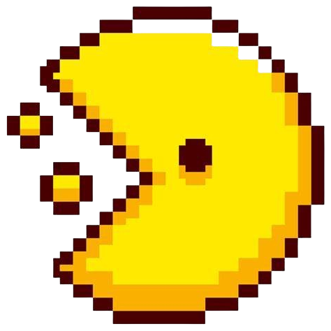
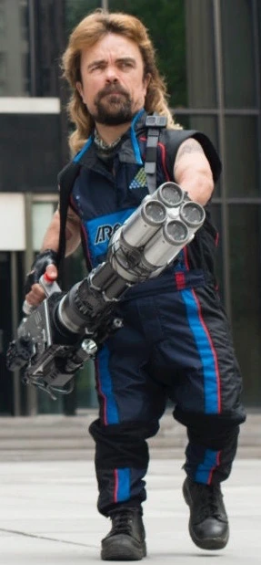
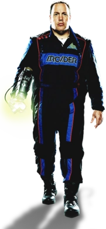

OLÁ, SOU O SAM BRENNER!
Bom, este é o meu portifólio onde você conseguirá saber um pouco mais sobre mim, espero que goste do que encontrará por aqui, e ficaria muito satisfeito se superasse as suas expectativas. Enfim, fique à vontade e aproveite, caso queira entrar em contato, é simples, clique no botâo amarelo no canto superior, e fale comigo!
Meus Feitos
Campeão Mundial de Arcades (1982)
Derrotei todos os recordes de fliperama nos anos 80 e fiquei conhecido como o melhor jogador de arcades da minha geração
Derrotei o Pac-Man na vida real
Com um carro especial criado por seu próprio criador, fui o responsável por parar o Pac-Man invasor em Nova York
Venci o Donkey Kong no campo de batalha
Usei minha memória dos jogos para derrotar Donkey Kong e salvar o planeta Terra de uma invasão alienígena baseada em videogames retrô.
Minhas Conquistas
- Campeão do Campeonato Mundial de Arcades de 1982
- Líder da equipe que derrotou o Pac-Man real em Nova York
- Reconhecido como especialista em padrões de jogos retrô
- Solucionador do desafio final contra Donkey Kong para salvar o mundo
- Medalha de Honra Presidencial por bravura em combate alienígena digital
- Nomeado herói internacional dos games pela ONU
Minhas Relações

